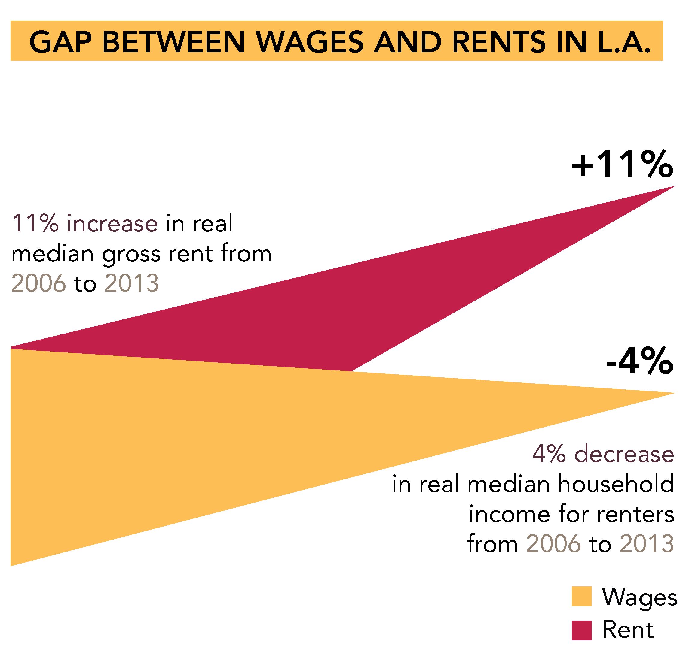
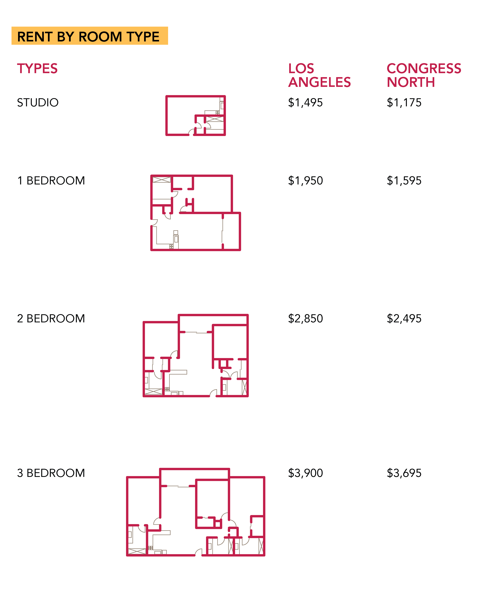
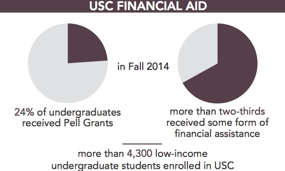

The cost of living close to campus
Students must contend with rising living expenses.
By James Tyner, Assistant City Editor
Caroline Neubrand lives in Parkside Apartments, a building owned and operated by USC Housing. It’s a modest building. In her apartment, the sophomore media arts and practice major has a small kitchen and a window that overlooks the Parkside lawn, where student organizations often host events. But the building is not without downsides.
“It’s old,” Neubrand said. “We don’t have air conditioning. We don’t even have a fan in our bathroom. And we have people come into our apartment regularly to fix things when we’re not here.”
When Neubrand began to look into housing options for the next academic year, she was surprised by how much it would cost to live in University-owned housing.
“I was looking at the housing prices for next academic year. This exact room, which costs [$4,955 per semester] this year, would cost [$5,130] next year. For the exact same room,” Neubrand said.
That sort of price increase isn’t limited to Parkside Apartments, or even to USC Housing. Over the next year, USC-owned apartments will see price increases in the hundreds of dollars across the board, and rental housing as a whole in University Park has undergone increases in price at a rapid pace. In the midst of a city whose apartments are becoming widely unaffordable, the USC area is facing even greater rent hikes.
Paying for proximity
A December report from housing rental website Zumper found that in 2015 the average rent increased by over 15 percent in the area surrounding USC, a “hip and upbeat young neighborhood” they called Congress North. This was relative to an 11.6 percent average increase across the city of Los Angeles.
An analysis by Rentcafe, a housing rental website, found that the ZIP code 90007 around USC was the second-most expensive ZIP code for rentals in Los Angeles County for 2015 — even more expensive than the booming South Park neighborhood, which includes the area around the Los Angeles Convention Center, Staples Center and L.A. Live. The only more expensive area for rentals was in Santa Monica, in the vicinity of Santa Monica College.
To make the difference even starker, ZIP code 90018, which lies just west of 90007 and features similar demographics to the USC area but lacks a university, was the fourth- least expensive for rentals for 2015, according to the same analysis. The boundary wraps around neighborhoods like Adams-Normandie and Jefferson Park.
Both ZIP codes have median household incomes roughly half the county average of $53,000, and population densities are roughly the same in both, at around 17,000 people per square mile, according to the Environmental Systems Research Institute, a company that specializes in geographic data. But Rentcafe found that the average rent in the Adams-Normandie area amounts to $917. In adjacent University Park, that figure is $3,500, nearly four times as much.
The difference is the University. Apartments near USC are marketed toward students; apartments in Adams-Normandie and Jefferson Park generally are not. Esri identified college students as the predominant demographic in University Park, making up roughly one-third of the population. In the Adams-Normandie area, nearly half the population is composed of young Hispanic families.
Rising rates, shifting community
Allen Griffin isn’t a USC student, but he lives in the area. On a hazy Monday evening, Griffin stood on the corner of Adams Boulevard and Figueroa Street, waiting for a Metro Line 37 bus while preteens on skateboards performed tricks off a railing at Popeye’s behind him.
In the line of sight from where he stood lay Lorenzo, West 27th Place and University Gateway, some of the most popular “luxury” housing offerings for USC students.
Griffin moved into the USC neighborhood several months ago, so the newly heightened rents are the norm to him. But despite his short tenure in the area, he’s aware of the change.
“Just talking to the neighbors and so on, they do see an increase,” Griffin said. “Some more than 15 percent. It just depends, and if somebody moves out and their rent is $700, then somebody moves in and they don’t know, the rent goes up to $800. No one really knows about that if nobody checks.”
The rent increases Griffin mentioned, where one tenant pays more than the previous one, are something that in many places would be regulated by rent control laws. But in Los Angeles, those regulations are rapidly becoming less widespread. The city’s Rent Stabilization Ordinance applies almost solely to buildings constructed before 1979, and it only prevents landlords from rapidly increasing rents for current tenants — new tenants can be charged any amount more than what old tenants paid for the same space.
California’s Ellis Act gives landlords the ability to evict all their tenants, renovate or rebuild their properties, and then start anew without rent control, meaning the RSOR.S.O. is losing ground more rapidly than it would naturally.
Given all of this, landlords in the USC area typically get to charge the market price for their spaces — as much as potential tenants are willing to pay.
Because USC students have more resources at their disposal — bolstered by student loans and parental incomes — they are more inclined to pay for higher-cost apartments. Students also have a much greater desire to live near the university than other community members would.
Gary Painter, a real estate expert and professor at the USC Sol Price School of Public Policy, said that demand for student housing is the principal force affecting price in the area.
“The simple story is that there is more demand in the rental housing market because of demographic pressures (a lot of millennial renters). There are 1000’s [sic] of units in the pipeline to be added, but they have not been added to the supply yet,” Painter said in an email to Daily Trojan. “The neighborhood near USC is well located near USC and downtown L.A. This puts even more pressure on prices.”
Because of these market forces, non-USC community members, who are more price-sensitive and less picky about location, would likely choose to live in a nearby ZIP code where apartments cost four times less. This reduces the downward pressure on rents near USC and allows them to rise even more rapidly.
Another contributor to the price increases is the “luxury” factor, where significant mixed-use developments build in amenities to attract students and market themselves as such. Lorenzo, for example, lists amenities like indoor basketball courts, a 100-seat movie theater, rooftop sundecks, a sauna, and a free shuttle to and from the USC campus on its website.
Griffin, as a relative newcomer to the neighborhood, was surprised at the divide between student-oriented and community-oriented offerings in the area.
“If you go north, south, east, or west of the University two or three blocks … it gets very different,” Griffin said. “The actual campus area … is really cool. It’s kind of clean down here on Figueroa. But once you go south of the campus, and a little bit north, and a little bit east, it changes. And that’s how it’s been. Ten years ago, I don’t know if we could be standing right here at the corner of Adams and Figueroa having this conversation.”
A balance of costs and benefits
The shift in the neighborhood atmosphere doesn’t solely benefit students. With programs spearheaded by its late President Steven B. Sample, USC has dedicated significant resources to improving the University Park and South Los Angeles communities in recent years, and that extends to housing as well.
As part of the USC Village development, the University has “pledged to donate up to $20 million to the City of Los Angeles’ affordable housing fund,” according to Craig S. Keys, USC Associate Senior Vice President for Civic Engagement and Economic Development. The city’s website says the housing fund’s resources are put toward “long-term loans for new construction or for the rehabilitation of existing residential structures through an open competitive Call For Projects process.”
The USC Village should lead to lower housing prices for students too, according to Keys. USC Housing currently provides residences for approximately 7,000 students, a number that has not fluctuated very much in the past five years. The under-construction USC Village will increase that number by about 2,700, which the University expects “should help drive down the cost of rent in the area,” Keys said.
The effect that the Village may have will remain to be seen, as the mixed-use development is not scheduled to open until the fall of 2017. For now, students and community members alike face rapidly-increasing rents.
As for Neubrand, she eventually decided to move to University Gateway next year because she felt it presented a better value than USC’s own offerings. But she remained dissatisfied with her options.
“I know I can get better for cheaper in other places,” Neubrand said. “I’ve read reviews of University Gateway and Tuscany and The Lorenzo, and people have a lot of bad things to say. Why is apartment housing and university housing so expensive when there aren’t many good things to say about it?
Graphic attributions from top to bottom:
Graphics (1, 2, 4) by Katlyn Lee
Graphic (3) by Samantha Lee